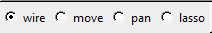
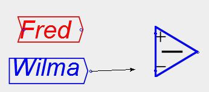
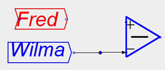
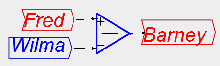

A model is constructed by wiring one component to another in a way that defines an equation. Wires are drawn from the output port of one block to the input port of another. Ports are circles on the blocks to which wires can be attached. Variables have an input and an output port; constants only have an output port. A mathematical operator has as many input ports as are needed to define the operation.
To construct an equation, firstly put the program into Wire mode:

Then click the mouse near the output port of one block and drag the cursor to the input port of another while holding the mouse button down.

Release the mouse button near the required input port of the operator and then release the mouse button

The equation is completed by wiring up the other components in the same way.
